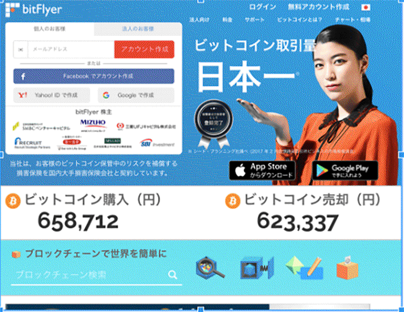
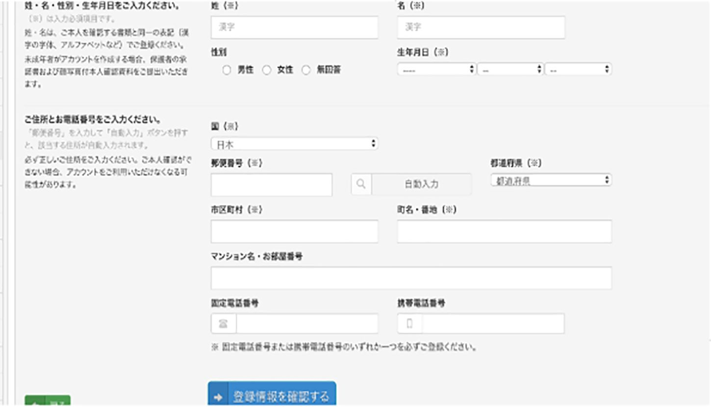
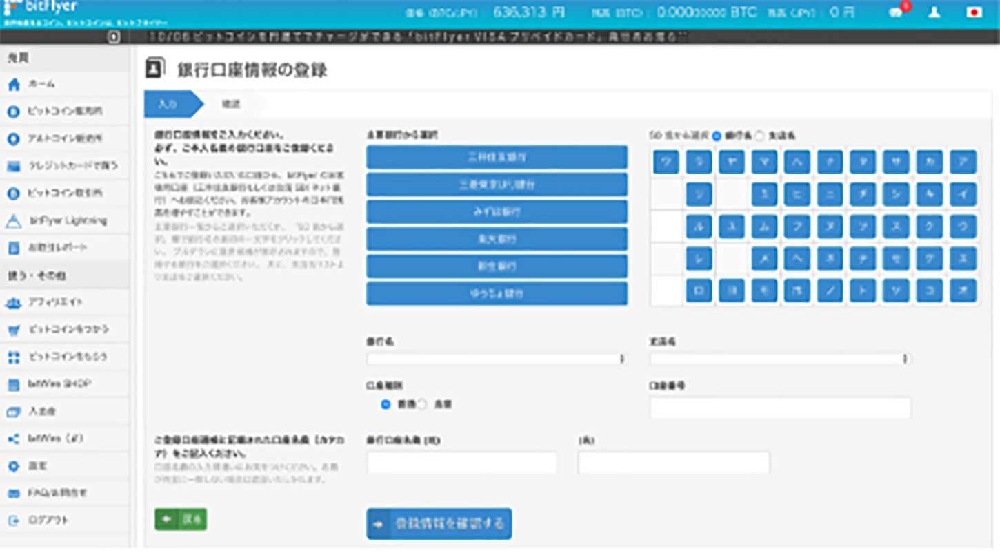
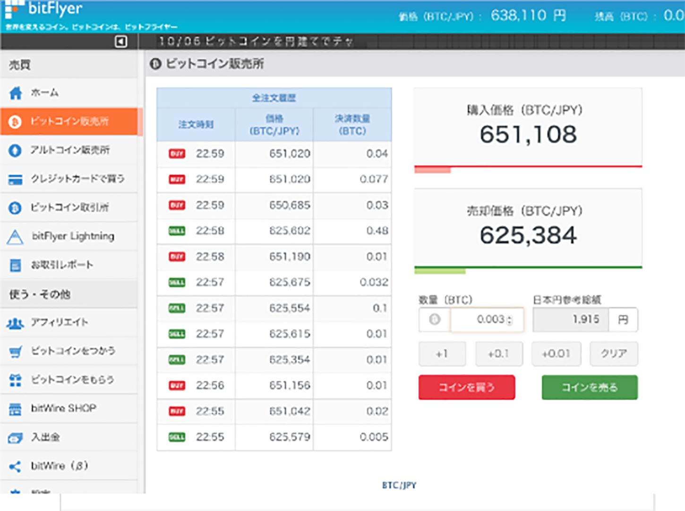

| 今一番儲かる仮想通貨「ICO投資」攻略法 | |
| 武田歩里 | |
| Hitotsuku Publication (2018) | |
今一番儲かる仮想通貨「ICO投資」攻略法
武田歩里
・はじめに
自分らしく、幸せと豊かさを手に入れられる自由な働き方と生き方を実現したい。４年前、私が独立したのは、そんな想いが強くなったことがきっかけでした。高校を卒業してから私立の薬学部へ進学。その後、結婚式場で勤務するようになってから、一組一組に密になったプランニングをしたいと思い、フリーランスのウェディングプランナーになりました。
仕事はとても充実していました。結婚式で幸せそうにしている新郎新婦の姿を見ると、この仕事のやりがいを感じます。一方で、本当にこれでいいのだろうかと悩むようになりました。このまま続けていて、未来はどうなるのだろうかと。
そんな時、私はメンターとして尊敬できる人生の師匠に出会いました。その方の周りには、年収で２千万円以上の方々がゴロゴロいらっしゃいます。そんな環境に身を置きながら、私は投資スクールの運営やサポートを始めることを決意しました。これまでの専門とはかけ離れた、未知の分野へのチャレンジです。
その後、私は「好きなことで起業」をテーマに、多くの方々のコンサルティングを手がけてきました。悩みを持つ女性を始め、多くのビジネスマンの方の相談に乗るにつれ、もっと多くの人たちが自由に人生を生きられる方法はないのかと考えてきました。
そこで発見したのが、今話題の仮想通貨投資です。仮想通貨と聞くと「怪しい」という考える人もいらっしゃるかと思います。しかし、仮想通貨そのものはこれからの世界を大きく変える可能性があり、投資するにはこれ以上ない対象
です。
この本では、まずそんな仮想通貨に対するイメージを払拭するために、なぜ仮想通貨が注目されるのかという背景からお伝えします。その後、仮想通貨の新しい投資手法・ＩＣＯについてご紹介します。あなたがもっと自由になる、とっておきの方法です。ぜひ最後までお付き合いください。

第１章 仮想通貨の基礎
・仮想通貨はどのように生まれたのか？
今、大きな注目を集める仮想通貨。しかし、この仮想通貨は決して単なる流行ではありません。そこで、この章では仮想通貨が誕生した経緯と私たちが普段扱っている法定通貨と何が違うのかについてお伝えしましょう。
そもそも、ビットコイン誕生のきっかけは２００８年までさかのぼります。そのきっかけは、Satoshi Nakamoto と名乗る人物がインターネット上に投稿した論文によって始まりました。この論文に書かれた暗号技術などを使った新しいデジタルデータの記録方法として提唱されたブロックチェーンを用いて新しい通貨を作れる可能性が示唆されていたのです。
この論文を読んだ有志の手によって、論文公開からわずか３ヶ月後に、現在のビットコインのもとになるソフトウェアがオープンソースで開発され、世界中に公開されました。そして、その後ビットコインによる最初の取引が行われました。この取引は、ピザを購入したもので、仮想通貨を用いた最初の売買行為として歴史に刻むことになるでしょう。
ちなみに余談ですが、Satoshi Nakamoto は誰だったのか、未だにベールに包まれています。いかにも日本人のような名前ですが、偽名である可能性が高いと考えられます。おそらく、本人は自らの身を案じて、正体を現さないのではないでしょうか。仮想通貨は、世界を大きく変える可能性が高いものです。インパクトが大きいものだけに、将来 Satoshi Nakamoto の存在を憎む人も出てくるでしょう。報復などを避けるため、Satoshi Nakamoto は伝説の人になるのではないでしょうか。
ビットコインの取引が行われてからおよそ１年後の２０１０年２月に、ビットコインの両替ができる取引所が初めて開設されました。その後、ビットコインが徐々に広まって行くことになり、現在に至ります。
ビットコインについては、世界中の仮想通貨取引所で購入することが可能です。また、日本では、２０１７年４月に改正資金決済法により、仮想通貨に関する規制を設けて、適切に取引ができるよう環境が整えられています。国の法律に影響を与えるまでに、ビットコインをはじめ仮想通貨の存在感は高まっているのです。
・従来の常識を消し去れ！ 仮想通貨と電子通貨はなにが違うのか
日本にいると、ほとんどの場合、日本円で決済しているかと思います。電子マネーにしても、今あるものは日本円を何らかの形でチャージすることになっています。つまり、決済をするにあたっては、法定通貨である日本円を利用しています。
なぜ、最初に日本円のお話から入ったかというと、仮想通貨を理解する上で、法定通貨との違いを理解するのが一番早いからです。仮想通貨は、これまでの法定通貨の問題点を解決する手段
といえます。
そして、仮想通貨を理解する上で、大事なポイントがあります。通貨と聞くと、多くの人は、紙幣や硬貨を思い浮かべることでしょう。仮想通貨に対してピンとこない方は、この常識にとらわれている可能性が高いです。この常識を良い意味で捨てられるかどうかも仮想通貨を理解するポイントです。
通貨は、私たちが普段使うような紙幣や硬貨である必要はありません。私たちの遠いご先祖様は、石を通貨の代わりとして使っていたという説もあります。もともと物々交換だったところを、石を用いることによって、物々交換ではなく、通過を用いた取引を可能にしたのです。少し想像してみてください。コンビニで水を買うとき、お店から「パンでなければ、水との交換に応じません」と言われたらどうでしょう。物々交換とは、かなり面倒なものなのです。しかし、この面倒なことを、通貨という手段を用いることで、解消することができるのです。
それでは、通貨になったのは、どのようなものでしょうか。石、金・銀が通貨のになっていた時期もありましたが、通貨になりうるものは、その時代によって変化してきました。これは何を意味しているかというと、通貨は、その時代の人が「通貨」と認めて信用すれば、決済などに使えるということです。私たちが使っている紙幣や貨幣は、私たちが意識しているかどうかは別として、「通貨」として認めているから使えるのです。
そして、現在新たなパラダイムシフトが起ころうとしています。これまで、紙など物質的なものが通貨の役割を担ってきましたが、これからはデジタルが通貨としての役割を担おうとしているのです。デジタルで個々人がいくら持っているか管理する時代になるのです。
電子マネーに近いものになるとイメージすれば良いでしょう。デジタルでお金の管理を行うには、勝手に個人の所有金額が書き換えられないようにするなど、セキュリティの問題がつきまといます。しかし、それを解決する手段としてブロックチェーンが誕生したのです。ブロックチェーンの誕生が、仮想通貨を生み出した大きなきっかけと言えます。
ブロックチェーンの詳細をお伝えすると、それこそ一冊の書籍になってしまいますので、ここでは詳細を省きますが、仮想通貨の根幹を支える技術と認識していただければと思います。
・従来の通貨にはない、仮想通貨の価値
先ほど、仮想通貨を電子マネーに近いものとお伝えしました。しかし、従来の電子マネーは法定通貨をベースにしたもので、ビットコインなどの仮想通貨は似て非なるものです。そこで、仮想通貨と法定通貨の違いについてお伝えします。仮想通貨の取引には、法定通貨で取引する場合に比べ、以下の３つのメリットがあります
１、発行量を決める管理主体が不在
２、Ｐ２Ｐでダイレクトに即送金可能
３、銀行の送金に比べ、手数料が安い
１つずつ、順を追って紹介しましょう。
１、発行量を決める管理主体が不在
私たちが普段使っている法定通貨は、中央銀行により管理されています。日本であれば、日本銀行になります。日本円は、日本銀行が通貨の発行量などをコントロールして、景気が上向くよう調整します。また、経済政策や景気の問題が絡みますので、当然政府の方針も反映されるようになります。すなわち、法定通貨は、中央銀行や政府の管理下にあり、そこで発行量を決められてしまうのです。
しかし、仮想通貨の場合、プログラムによって一定期間における発行量は決められています。なので、政府や中央銀行の思惑で勝手に通貨が乱造されたり、逆に預金封鎖のようなことが行われることがありません。
日本人だと、ピンと来ないかもしれませんが、海外では通貨が乱造されてハイパーインフレーションが発生したり、経済危機によって預金封鎖が発生しています。後者のパターンでいえば、ギリシャやキプロスなどで発生しています。頻発するものではありませんが、まさかの事態はいつ起こるかわかりません。政府や中央銀行によって、価値が左右されることがない
のは、大きなメリットと言えるかもしれません。
２、Ｐ２Ｐでダイレクトに送金可能
また、仮想通貨は、利用者同士でダイレクトに送金が可能となっています。また、送金もすぐに完了することができ、利便性が高いといえます。通常、送金する場合は、銀行口座を介して行ったり、お店の決済であればクレジットカードはパスワードを入力する必要があったりするなど、不便なことが多いです。Suica のような電子マネーも、チャージをしていないと使えなかったり何かと困ったことが多いです。
しかし、仮想通貨の場合、送金はスマートフォンを用いて、メールを送るかのごとく簡単にスピーディーに行えます。また、決済の時も、ＱＲコードを読み込んで完了
という流れになります。ダイレクトに送金できると、便利なことが多いのです。
３、銀行の送金に比べ手数料が安い
そして、もう１つのメリットが、送金に関わる手数料が安いことです。私たちが銀行口座から送金する際、金融機関に手数料を支払うことになります。少額の送金だと、かなりの負担になってしまいます。また、海外に送金しようとすると、その手数料だけでなく、時間もかかってしまいます。
しかし、仮想通貨の場合、この送金に関わる手数料が金融機関の送金手数料に比べて安い
です。しかも、国内外問わず、すぐに送金できるというメリットがあります。仮想通貨でやり取りすることで、お金のやり取りが法定通貨を利用する際に比べ、圧倒的にコストを抑えて実現できるのです。
・仮想通貨に注目が集まる背景
通貨と聞くと、先ほどもお伝えしたとおり、私たちは国が発行するものと考えがちです。なので、発行できる組織は限られていると思います。そして、発行するというのは、紙幣や硬貨ができると想像するでしょう。しかし、仮想通貨の誕生により、これは私たちの思い込みになるかもしれません。
むしろその時代でもっとも扱いやすいものが、通貨の材料になっている傾向があります。紙幣があるのは、紙が扱いやすいからそれを使っていると考えることができます。しかし、現代では、もっと扱いやすいものがあります。それが、「デジタルデータ」です。
例えば、知り合いの携帯電話番号はどのように管理しているでしょうか？ 紙の手帳に書き込んで管理しているという方はほとんどいらっしゃらないはずです。携帯電話の連絡帳に、デジタルデータとして管理されているはずです。紙で管理していたものが、デジタルに移行している良い例かと思います。
デジタルで管理するというのは、何も電話番号だけではありません。お金だってデジタルで管理できます。実際、電子マネーもデジタルになっていると言えます。そして、デジタルになることで、紙などの物質的な材料は不要になります。
仮想通貨に注目が集まる背景は、まさにこのような事情があります。通貨を発行することに対するハードルが一気に下がり、しかもデジタルであれば誰でも好きなだけ発行することができる
のです。もちろん、価値がつくかどうかは先ほど信用の問題が絡みます。極端な話のように聞こえるかもしれませんが、誰でも好きなように発行できるようになったからこそ、仮想通貨は次々と誕生しているのです。
ここまで、仮想通貨の基本的な知識についてお伝えしました。いかがでしたでしょうか。仮想通貨は決して怪しいものではないことをご理解いただけたと思います。そこで、次の章では現在どのような仮想通貨があるか見ていきましょう。
第２章 どんな仮想通貨があるのか
・１２００種類！ 多種多様な仮想通貨
「仮想通貨ってビットコインのことですよね！？」
最近、知り合いの方からこんな質問を受けました。ニュースでも、頻繁にビットコインの話題が取り上げられ、気になる人も多いことでしょう。
この質問の答えとしては、そうとも言えるし、そうとも言えない部分があります。正確に伝えると、ビットコインは仮想通貨の一種
です。しかし、仮想通貨には、ビットコイン以外にもたくさんの通貨があります。その数は、増え続けており、１２００種類以上
あると言われています。
そこで、ここでは仮想通貨として代表的な通貨を紹介します。そして、その主要な通貨について、詳細をお伝えいたします。それは、以下の３種類です。
・ビットコイン
・リップル
・イーサリアム
仮想通貨の世界は変化が激しく、現在ある通貨を網羅的に紹介したところで、その情報がすぐに陳腐化する可能性もあります。そのため、ここでは、変化が起きても役立つ、基本的な情報を中心にお伝えします。
これらの通貨でも、ビットコインは円で購入することができます。その後、ビットコインでリップルやイーサリアムを購入するのが一般的な流れです。
この時、「ビットコインをどこで購入すればいいか」とよく質問を受けます。その時におすすめしているのが、日本の仮想通貨取引所・bitFlyer（以下、ビットフライヤー）
です。bitFlyer は日本で最大手の取引所でセキュリティもしっかりしており、安心して利用することができます
。初めて購入するという方は、おすすめです。
ここでは、簡単にビットフライヤーでビットコインを購入する方法を紹介します。
１、まずはアカウントを登録します。

２、本人情報を入力します。ここでは、氏名や住所などを登録して、身分証明書のアップロードも行います。

３、銀行口座情報や入金方法を登録します。

４、入金まで完了すると、日本円でビットコインを購入することができます。

詳細を知りたい方は、まずＬＩＮＥ＠
へ登録をお願いします。また、すぐに登録ができるようビットフライヤーのリンクも併せてご紹介します。
https://bitflyer.com/ja-jp/AccountCreate
・一番最初に生まれた仮想通貨・ビットコイン
今では多くの人が知るようになったビットコイン。全ての仮想通貨の源流になり、ビットコインを知ることが仮想通貨を知る第一歩になると言っても過言ではないでしょう。
ビットコインは、２００９年に Satoshi Nakamoto によって考案されたことはお伝えしたとおりです。その後、有志の手によって開発が進められ、現在の仮想通貨で当たり前になっているＰ２Ｐ型のネットワークによる送金、仲介者なしで行えるユーザー同士ダイレクトトランザクションなどその原型を作りました。
ビットコインを知る上で、１つ重要な要素があります。それが「マイニング」
というものです。これはビットコインの技術面だけでなく、ビットコインの価値にも大きな影響を与えます。そこで、まずはこのマイニングの概念から押さえておきましょう。
マイニングとは、取引の整合性をチェックする確認作業
と理解していただければと思います。整合性をチェックして、最後に問題ないと承認した人に、報酬としてビットコインが与えられます。このビットコインが付与されることが理由で、金の鉱脈を掘るのと承認作業を行うことが本質的に似ているということもあり、マイニングという名称がつきました。
このマイニングに参加するためには、承認作業を行うための高性能マシンが必要です。また、このマイニングを行う「マイナー」という存在がいないと、ビットコイン自体がそもそも成り立ちません。
マイナーで比較的多いのが中国系の企業です。中国系企業は、自国の安い電気料を武器に、高性能マシンをフル回転させて、多くの承認作業を行なっております。しかし、このマイナーたちの存在が大きくなりすぎると、問題も出てきます。それが、２０１７年８月にあったビットコインの分裂問題です。
分裂問題は、大きく分けてビットコインの利用者側とマイナーの間で発生した対立がきっかけです。利便性を求める利用者と、利便性が高まると自分たちの承認作業の手間が減り、報酬が減ってしまうことを懸念したマイナー。この両者の対立は世界中に知れ渡ることになります。もちろん、ビットコインの価値は大暴落。煽りを受けて、他の通貨も価格が大きく下がることになりました。
最終的に、マイナーたちは自らでビットコイン・キャッシュという新たな仮想通貨を発行するということで分裂問題はひと段落しました。既存のビットコインは、利便性を高め、価値を元に戻すどころか過去最高額を突破するまでになりました。
ここで重要なことは、仮想通貨で一番流通しているビットコインでもまだまだ価値が安定しないということです。ボラティリティー（価格の変動）が大きいことをどう捉えるかは人それぞれですが、安く買って高く売れた時の利益は非常に大きいものになります
。
ビットコインも、今後マイナーやプログラムを開発している人々、そしてユーザーの間で今後対立が発生する可能性もゼロではありません。当然、見方によってはネガティブになりますが、一方で前回の分裂騒動のように暴落したところで購入して、最高額で売り抜くという理想的な投資ができる可能性もあります。
また、現状はビットコイン以外の通貨を購入するために、法定通貨でビットコインを購入して、その後ビットコインで他の仮想通貨を購入するのが主流
です。今後様々な仮想通貨が誕生することが予想されますが、当面はビットコインが軸になる可能性が高いでしょう。また、ビットコインが仮想通貨を世に知らしめた功績は、恐らく永遠に語り継がれるでしょう。
・２０１７年末、価格が急上昇したリップル
仮想通貨の投資対象として、このリップルの存在も忘れてはいけません。
リップルは、２０１２年にブロックチェーンを用いた国際決済を行うため
に公開されました。ビットコインと異なり、この国際決済という目的がリップルの特徴です。
リップルは、借用証明書を用いて金融機関同士でやり取りを行います。この借用書のことをＩＯＵといいます。このＩＯＵで取引を行うことで、お金そのものを送るよりコストをかけずに資産の移転が可能になるのです。
リップルの活用は、金融機関で実証実験が積極的に行われています。みずほフィナンシャルグループ、ＳＢＩホールディングスなど、リップルの技術を国際決済で活用しようと取り組んでいます。特に、ＳＢＩグループは、「SBI Ripple Asia」を立ち上げて、ブロックチェーン技術を活かしたフィンテックソリューションの開発や、それらに付随するコンサルティング業務を行います。リップルの商用利用を進め、それによりビジネスが発展していくことで、リップルそのものの価値がさらに高まるかもしれません。
・今年は大注目！？ イーサリアムとは
昨年末に時価総額でリップルに抜かれたのがイーサリアムという仮想通貨です。そう聞くと、少し落ち目のように感じますが、今年はこのイーサリアムが大ブレイクするかもしれません。
イーサリアムとビットコインとの違いを挙げるなら、イーサリアムはお金の取引情報以外の情報も記録できる
という点です。例えば、お金を１ヶ月後に払うという取引を行う場合、ビットコインではその日に手動で支払う必要があります。しかし、イーサリアムを用いると、支払日は１ヶ月後という情報も記録することができるため、その日に自動的に支払いを行うことができるのです。このように、イーサリアムは、拡張に優れ、さまざまな形で運用することができるのです。
・イーサリアムが注目される理由は？
拡張性に優れたイーサリアムですが、この仕組みを使って世の中の「契約」に関する仕組みが大きく変わるかもしれません。それが、「スマートコントラクト」
という新たな仕組みです。スマートコントラクトは、先ほど挙げたイーサリアムの仕組みを使って、契約が自動的に履行されるもの
です。
契約のトラブルでよくあるのが、契約内容の不履行です。約束の日に支払いがない、モノやサービスが提供されないなどが挙げられます。不履行になった場合、多くのケースでは被害を受けた人が泣き寝入りをすることになります。そのため、契約がしっかり実行されるかどうかなど、お互いに弁護士を立てて話し合いを行う慎重に進めるケースがあります。しかし、これも契約に関するコストが発生しています。
もし、決められた契約が必ず実行されるとしたら？ 不履行になって泣き寝入りすることも、契約に伴うコストもかかることがありません。それが、スマートコントラクトのメリットです。一度決めた契約内容は、プログラムにしたがって自動的に行われるのです。
また、イーサリアムは、スマートコントラクト以外にもさまざまな用途で利用が可能です。イーサリアムの商業利用を検討する「エンタープライズ・イーサリアム・アライアンス（ＥＥＡ）」という組織も立ち上がっているほどで、日本からもトヨタ自動車や三菱ＵＦＪなどが参画しています。今後あらゆるアプリケーションのベースにこのイーサリアムが活用されるかもしれません。
・イーサリアムでＩＣＯに参加可能
そして、もう１つ、イーサリアムが大きく注目される要因があります。それが、この書籍のテーマであるＩＣＯです。このＩＣＯは、今後仮想通貨へ投資する際のキーワードになるでしょう。
ＩＣＯとは、Initial Coin Offering の略称で、似たような用語で、企業の株式を取引所に上場させるＩＰＯ（=Initial Public Offering）というものがあります。用語が似ているだけでなく、実際に行われることも「資金調達」という側面では一緒です。しかし、ＩＣＯの特徴は、ＩＰＯにはない自由度と世界中から資金を調達できるというスケールの大きさ
にあります。
そこで、次の章では、このＩＣＯについて詳しくお伝えしましょう。仮想通貨のとんでもない可能性がここに眠っています！
第３章 脅威の投資！ ＩＣＯとは
・そもそもＩＣＯとは何か
これから仮想通貨投資のあり方を大きく変えるであろうＩＣＯ。株式を上場するＩＣＯに似ていると言いますが、具体的にはどのような違いがあるのでしょうか。
ＩＣＯは、ＩＰＯのように厳しい審査などはありません。ホワイトペーパーという書類をインターネットにアップロードして、資金調達を行うホームページを作成すれば、始めることができます。また、ＩＰＯのように主幹事となる証券会社を立てる必要もありません。このため、ＩＣＯを行いたい場合は、自由に行うことができるのです。
ただ、これらのメリットは裏を返せばデメリットにもなります。その点については、詳細を後述してお伝えいたします。
ＩＣＯによる資金調達は、２０１６年から２０１７年にかけて急激に増加しています。２０１６年は、世界でわずか１００億円程度だったところから２０１７年はなんと４，５００億円まで増加
しています。ＩＣＯによって巨額の資金を調達できることがわかり、数多くのプレイヤーが参入しているのがその理由です。
２０１８年は、メッセンジャーアプリのテレグラムやアメリカの老舗企業・コダックが大型ＩＣＯを行うと発表しており、昨年を凌ぐ規模で行われています。しかし、なぜここまで急激にＩＣＯが普及し始めているのでしょうか？
・２０００倍に値上がり！？ ＩＣＯが注目される背景とは
また、資金を募る際は、多くの場合イーサリアムやビットコインで行います。つまり、イーサリアムやビットコインを持っている投資家であれば、場所に関わらず参加することができるのです。通常のＩＰＯでは、上場した国の法定通貨で投資を行う必要があります。このため、対象となるのは、上場した国の投資家に限られてしまいます。ところが、ＩＣＯの場合、このような縛りはないのです。世界中からお金が集まるようになる
ということが、仮想通貨の可能性を示しているといえるのではないでしょうか。
実は、イーサリアムもこのＩＣＯによって誕生しました。ＩＣＯは、最初に買い手をつけるために、プレセールというものを行います。その時、イーサリアムの価値は、１ＥＴＨ20
円ほどでした。しかし、その後イーサリアムの価値が認められるようになり、取引所でも頻繁に取引されるようになると、最高で１ＥＴＨ４０，０００円まで上昇しました。プレセールの時から、なんと２０００倍の価値をつけるようになったのです。おそらく、これほど価値が上昇する投資案件は、過去にほとんどないのではないでしょうか。これが、ＩＣＯの醍醐味の１つでもあります。
このＩＣＯを使って、新たな仮想通貨が続々と誕生しています。仮想通貨の種類が増え続けている理由は、このＩＣＯの影響も大きいです。
また、日本でも、注目されているＩＣＯがあります。それが、テックビューロの「ＣＯＭＳＡ」
と呼ばれるものです。ＣＯＭＳＡは、ＩＣＯがさらに盛んになるよう、ＩＣＯプラットフォームを提供しようというプロジェクト
です。
これまで、ＩＣＯを行うには、ブロックチェーンの運用を含め、全て自前で行う必要がありました。しかし、ブロックチェーンを運用できるエンジニアはまだまだ少なく、運用に伴うハードルは非常に高いのが実情です。それを解消するために、テックビューロでは、ブロックチェーンの運用やホワイトペーパー作成の支援まで含めたプラットフォームサービスを展開しようとしているのです。テックビューロが行なっているＩＣＯは、このＣＯＭＳＡに対する支援を呼びかけています。テックビューロは、集まった資金を元手に、システムの強化などを進めるとしています。
このＣＯＭＳＡに対する反響は大きく、ＣＯＭＳＡが発行したホワイトペーパーのダウンロード数は、６０，０００件以上と言われています。また、日本国内だけでなく、アメリカでも Tech Crunch など主要なＩＣＴメディアが取り上げて注目しています。
ＣＯＭＳＡでは、日本におけるＩＣＯが適切に行われるようルールづくりも目指していると思われます。ＩＣＯ協議委員会という組織を設置して、今後に関して議論されていくことでしょう。また、ＣＯＭＳＡが機能すれば、ＣＯＭＳＡを使ってＩＣＯを行う企業も増えてくることでしょう。
日本でも、今後ＩＣＯが活発化して、企業の資金調達のあり方が大きく変わってくるかもしれません。
・詐欺も多い！？ 気になるＩＣＯの実態
ＩＣＯは大きな可能性を秘めている一方で、課題があるのも事実です。一番大きな問題は、詐欺まがいのＩＣＯが散見されることです。ＩＣＯは、自由度が高いとお伝えしましたが、見方によっては、制度化されておらず、投資家保護のルールもないということを意味します。このため、ＩＣＯブームに乗って、世界中から資金を集めて、そのまま消失してしまうケースもあります。また、お金を集めたにもかかわらず、プロジェクトなどが頓挫して、終わってしまう可能性もあります。この場合も、ＩＣＯに投資したお金は無駄になってしまいます。
このような事情もあり、国によっては、ＩＣＯに対して規制を行おうとしています。例えば、アメリカは、２０１７年７月25
日に、ＳＥＣ（アメリカ証券取引委員会）がＩＣＯに対して注意喚起を行なっています。また、中国や韓国では、ＩＣＯが全面的に禁止となりました。特に、中国はビットコインの取引所も閉鎖するなど、仮想通貨に対して厳しい姿勢を取っています。
また、日本でも２０１７年10
月27
日に、金融庁がＩＣＯに対する注意喚起を行なっています。価格が急変動するリスク、詐欺まがいの事例が出ていることを理解した上で、自己責任で取引するよう呼びかけています。また、ＩＣＯの仕組みによっては、資金決済法や金融商品取引法の規制対象になり、無登録で事業を行なった場合は刑事罰になると警告を行なっています。
かなり厳しい姿勢を打ち出していますが、今後ＩＣＯについても制度化が世界的に進むものと思われます。ＩＣＯがきちんと機能すれば、企業は資金調達を世界規模で行うことができ、投資家にとっても資金運用先が増えるなどメリットが生まれます。国家の意向にかかわらず、ＩＣＯは今後も伸び続ける可能性が高いでしょう。
・ＩＣＯで儲けるには情報が全て
それでは、ＩＣＯを行う上で、もっとも大事なことはなんでしょうか？ 投資で稼ぎたい方にとって、一番気になるのではないでしょうか。
結論から言うと、一番大事なのは「情報」です。これはＩＣＯに限りませんが、情報は最も価値の高いものです。情報をどこから取るかで人生が決まってしまう、それくらい重要なものだと断言できます。しかし、残念ながら、世の中の多くの人はこのことに気づいていません。
インターネットが普及して、スマートフォンで簡単に情報が取れるようになりました。情報は、インターネットで検索すれば無料で手に入るという感覚が染み付いている人が多いです。しかし、こんな時代だからこそ、必要な情報に対してお金をかけてでも取りに行く人は、他の人と差をつけやすい
ようです。
ＩＣＯの情報については、検索するとさまざまなものが出てきます。そのサイトを見て、ＳＮＳ等に登録して情報を得ると、それなりに正しい情報を持っているような気になります。しかし、残念ながらそれらの情報はほとんどあてにならない
のが実情です。内容を見ても、ＩＣＯの詳しいところまで踏み込んでいない、浅いものがほとんどです。この情報をもとに投資を行うのは非常にリスクが高いといえます。
とはいえ、情報どこからとればいいのか見当がつかないという方も多いでしょう。そこで、そんなあなたに１つの指針をお伝えします。
・タダほど高いものはない。確かな情報はどこから入手すればいいか
それは、その分野のプロから情報得る
ということです。当たり前のように感じますが、これを実践できている人はほとんどいません。それだけ多くの人が、情報得ることに対して意識がないのです。
その分野のプロから得る情報は、インターネットで検索して出てくる情報とはまるで違います。インターネットの情報は、その出典がどこにあるのかあやふやな場合がほとんどです。しかし、プロから得る情報はその出典も確かなところで信頼性も高い
のです。
そこで、もう１つ問題が浮かんできます。それが、どうやってプロを見抜くかです。その相手がプロかどうかを見抜くのは、情報を得る上で非常に重要なポイントです。一体どうやって見抜けば良いのでしょうか？
・プロかどうかは「実績」で判断する
実はこの方法はとても簡単です。なぜなら、その人がプロかどうかは実績で判断できる
からです。なぜなら、プロは、実績を出して一人前のビジネスマンとして活動することができるのです。
そういう意味では、この本を読んでいるあなたはとてもラッキーです。私たちのコミュニティには投資のプロが揃っており、ＩＣＯにこれから取り組みたいあなたを情報提供からバッチリサポートすることができる
からです。私自身がそうだったように、このコミュニティについていけば、あなたはＩＣＯで驚くほど稼ぐことができるでしょう。
私たちのコミュニティは、投資の分野で確かな実績を出しています。そして、その経験をもとにＩＣＯでも数多くのパートナーから厳選して、確かな情報を得られる人と手を組むことができました。
一体どのような人と手を組んでいるか、気になる人も多いでしょう。そこで、この書籍を購入していただいた方に、特典としてＬＩＮＥ＠
への登録をできるようにいたします。こちらで登録してくださった方に、その情報をお伝えできるようにしますので、興味をお持ちになった方は是非こちらへご登録ください！
第４章 ＩＣＯを始める上で必要なマインドセット
ここまで、仮想通貨とＩＣＯについて紹介してきました。仮想通貨は、最近特に注目を集めていますが、これからはＩＣＯが今後さらに注目を集めることが予想されます。そのＩＣＯに早くから参入できるのは大きなメリットがあるといえるでしょう。
しかし、ＩＣＯを始めれば稼げるようになるかと言われると、実はそうではありません。ＩＣＯはあくまで手段であり、その手段をうまく使いこなせるかどうかはそれを扱う人、すなわちあなた次第です。
つまり、大事なことはあなたがＩＣＯに取り組むことで成功する人間になれるかどうかです。これを、私たちはマインドセット
と呼んで、投資を始める人へお伝えしていることです。このマインドセットは、ＩＣＯに限らず何か取り組むときに必ず必要となることです。ここから目を背けている人は、なかなか成功をつかむことができないでしょう。
一方で、マインドセットをしっかりできた方は、ＩＣＯを限らず何に取り組んでも成功することができるでしょう。なぜなら、このマインドセットは、どんなことをやるにも通じるものだからです。成功者は、このマインドセットをほぼ完璧に行っています。
それでは、このマインドセットは一体どのようなものでしょうか。ここでは、基礎中の基礎を５つお伝えしましょう。
１、投資のプロから学ぶ気持ちを持つ
まず、私たちが推奨していることが、プロからしっかりと学ぶことです。３章でも少しお伝えしましたが、投資の分野にはその道のプロがいるものです。せっかくプロがいるなら、その方から学ばないと非常にもったいないです。
男性の方に多いですが、よく「自己流」でやってしまい、大失敗する人がいます。自分のやり方を貫くのは、一見するとかっこ良く見えます。しかし、これは一転して「事故流」
になってしまいかねません。
プロから学ぶメリットは、とてもたくさんあります。まずは、プロがどのような姿勢で投資に取り組んでいるか、その姿勢に刺激を受けることができる
ことです。これにより、あなたの投資に対する意欲も前向きになるでしょう。
さらに、学べるのは姿勢だけではありません。もちろん、投資の王道とも言うべきやり方を学ぶこともできます
。投資で稼ぐためのやり方をマスターすることができれば、あなたの成功はもう目の前でしょう。
私たちがプロから学ぶことを推奨するのは、このような理由があります。ＩＣＯもその道のプロからしっかり学んでいただきたいです。男性の方は、どうしてもプライドがあるので、素直に学ぼうという気持ちになりにくい傾向があります。ただ、成功を掴みたいのであれば、プロからしっかり学ぶ姿勢を忘れないでください。
２、自分だけでなく、仲間とともに成功を目指す
人間は、１人では弱い生き物です。自分でできることも限りがあります。また、気持ちが持たず、挫折しそうになることもあるでしょう。１人でやり続けるというのは、なかなかタフなことです。
なので、私たちは１人ではなく、仲間とともに成功しようというスタンスが大事だと思います。仲間がいれば、うまくいかない時などお互いに励ましながら歩み続けることができます。また、ライバルのような存在が稼いだと聞くと、もっと頑張ろう！ という気持ちになり刺激を受けることができます。
私たちが、コミュニティとして活動しているのは、このような理由があります。仲間がいるから、互いに刺激し合って、より良い取り組みができるように務めています。私もリーダーのような立場になることもありますが、メンバーの方から刺激を受けることもたくさんあります。こうやって、ポジティブな流れをどんどん作っていけるのが、仲間と一緒にやるメリットです。
３、噂に惑わされず、プロからの情報を信じる
ＩＣＯのようにこれから市場が成熟していく投資は、さまざまな情報が飛び交います。まさに、玉石混交という言葉がぴったりな状況です。それだけに、これらの情報に惑わされないようにするのがとても重要です。
先ほどから、プロの言うことをしっかりと聞くということをお伝えしてきました。しかし、人間は弱いもので、ちょっと良さそうな情報を聞くとすぐにそちらに飛びつきたくなるものです。だからこそ、プロから学ぶことが重要だということをお伝えし続けているのです。
ＩＣＯに関するインターネットの情報は、残念ながらほとんどアテになりません。ＩＣＯの際に発行されるホワイトペーパーですら、内容が乏しく、投資判断ができないものばかりです。ましてや、これからＩＣＯに参入しようという人であれば、なおさらです。
ホワイトペーパーの記述で特に足りないのは、実現性に関する内容です。このホワイトペーパーには、ＩＣＯが成功してサービスがローンチされた際に実現できることが記載されています。その内容も、世界を変えるような壮大なものばかりです。
しかし、その構想に実現するための具体的なアクションについてはほとんど記載がありません
。それこそ、国を動かすようなプロジェクトの場合、政府関係者などの要人とのコネクションなどが無ければ現実的に不可能でしょう。残念ながら、ホワイトペーパーはそこに対して言及することはほとんどありません。
ＩＣＯのホワイトペーパーの内容に実現性があるかどうかは、まさにＩＣＯを詳しいプロのみが知るもの
です。実は裏でこんなつながりがあるからＩＣＯが実現できるなど、プロが持っている情報は違います。そういった点を踏まえ、情報は必ずプロから取ることをおすすめします。
４、どうしたらうまくいくか考え続ける
何か新しいことを始める時、私たちはどうしても不安になってしまうことがあります。うまくいくだろうか、失敗したらどうしよう、何もチャレンジしていないのに自然とこんなことを考えてしまうこともあるのではないでしょうか。
新しいことを始めるときに、不安になるのはある意味当たり前です。しかし、起きてもいないことにあれこれ考えていても仕方がありません。うまくいくかどうかは、やってみないとわからないのですから。
また、周囲にはあなたに対して助言をしてくれる人がいるかもしれません。「危ないからやめたほうがいい」、「リスクが大きすぎる」など、あなたのことを思ってその言葉を投げかけてくれる人がいるのではないでしょうか。しかし、そういう人の言葉ほどあてにならないということを私は経験から学んでいます。
何か新しいことを始める時、大事な事はどうやったらうまくいくかを考え続けることです。そして、成功したときの自分をイメージしながら取り組んでいくことです。
私は、そうやって自分の人生を切り開いてきました。
自分の望む未来は、過去の延長からでは得られないことがほとんどではないでしょうか。
もしそうなら、過去の経験にとらわれず、新しいチャレンジをして自分の理想に向かって走り出す必要があります。
そうやって、チャレンジをしていくことで、あなたはおのずと成功に近づくことができるでしょう。
５、状況が整わないからこそチャレンジする
新しいことをチャレンジしようとする人の中には「状況が整わない」、「仕事が忙しくて」という理由をつけて、結局何もやらない人がいます。確かに、サラリーマンであればそれなりに仕事を抱え、日々忙しくしていることでしょう。
しかし、チャレンジしない人の末路は、結局何も変わらない
ということです。いや、変わらなければ良い方で、今の世の中を見ると現状より悪くなる可能性が高い
でしょう。それは、バブル崩壊からの失われた30
年を見れば明らかです。
アベノミクスで景気が良くなっているとはいえ、サラリーマンの給与はほとんど変わりません。日本社会の構造上、これから経済が急速に成長する可能性は低く、政治がいくら頑張ったところで状況は大きく変わらないでしょう。いや、むしろ中国やインドなどの新興国に押されて、日本の地位はどんどん下がっていく可能性が高いです。何も行動を起こさないと、この社会状況に飲まれて、あなたの人生は成功からどんどん遠ざかっていく
ことでしょう。
社会状況は、もはや待ったなしです。そんな中、自分の状況が整ったらと考えていると、手遅れになってしまいます。必要性という観点からも、この言い訳は封印する必要があるのではないでしょうか。自分の状況は、自分で整えるものです。チャレンジするときは、まさに「今」
です。
・私が運営する投資コミュニティについて
私たちの投資コミュニティは、ここでお伝えしたようなマインドセットからしっかりサポートします。ひょっとすると、耳の痛い話もあるかもしれません。しかし、それはある意味で成長痛のようなもの。理想の人生にするには、遅かれ早かれ経験する必要があります。
この書籍を読んで、「自分も成功したい！」というあなた。まずはＬＩＮＥ＠
に登録してください。一緒に最高の人生を作っていきましょう。
・おわりに
「好きなことで起業する」
これは、私がコンサルティングをする際にテーマにしていることの１つです。誰しも、自分の好きなことや、やってみたいことというのがあるはずです。それを実現できるような人生を送りたい、そんな人をサポートしたいという思いがあります。
一方で、やりたいことはあっても、時間とお金がないのでできないという人も多くいらっしゃいます。いや、ひょっとするとほとんどの人がそうかもしれません。この問題を解決する手段はないか、私たちは必死に探し続けてきました。
そこで発見したのがＩＣＯでした。ＩＣＯは、どんな人でも一獲千金のチャンスがあります。しっかりとプロから学び情報と取れば、このチャンスを活かすことができるでしょう。そして、それは自分の理想へ向かう第一歩になる
のです。
ＩＣＯというビッグチャンスが目の前にある今、挑戦しない手はありません。そのことを伝えたく、私はこの書籍を出すことに決めました。仮想通貨のこと、ＩＣＯのこと、そしてマインドセットのこと、紙面を割いてできる限りわかりやすくお伝えしたつもりです。そのことが少しでもあなたに伝われば、これに勝る喜びはありません。
最後になりますが、私をここまで導いてくださったメンターの皆様に心から感謝申し上げます。今の私があるのは、この方々との出会いがあったからこそです。これからさらに理想に近づけるよう、私ももっとチャレンジし続けます。
著者プロフィール
武田 歩里（たけだ あゆり）
起業コンサルタント
１９８９年生まれ・秋田県出身
高校卒業後、私立大学薬学部へ進学。
結婚式場に勤務。２０１４年に独立を決め、フリーランスとして活動。
そこから、ビジネスを学ぶメンターに出会い年収２千万以上の講師陣とともに、投資スクールを運営・サポートも始める。
その経験から「好きなことでの起業」を
多くの人に伝えたいとコンサルティング活動を開始。
悩みを持つ女性を中心にコンサルティングをし、
投資やビジネスにおいてもサポートをしている。
女性らしく自分らしく、
幸せと豊かさを手に入れられる自由な
働き方や生き方を発信している。
YouTube 番組
https://www.youtube.com/channel/UCj1obfv0spfF7FNHF8yJjSw
タイトル 今一番儲かる仮想通貨「ＩＣＯ投資」攻略法
発行日 ２０１８年５月19
日
著 者 武田歩里
本書の全部あるいは一部をコピー、スキャン、デジタル化する無断複製は、著作権法上での例外である私的利用を除き禁じられています。本書を代行業者等の第三者に依頼してコピー、スキャンやデジタル化することは、たとえ個人や家庭内での利用であっても一切認められていません。
©２０１８ Ayuri Takeda